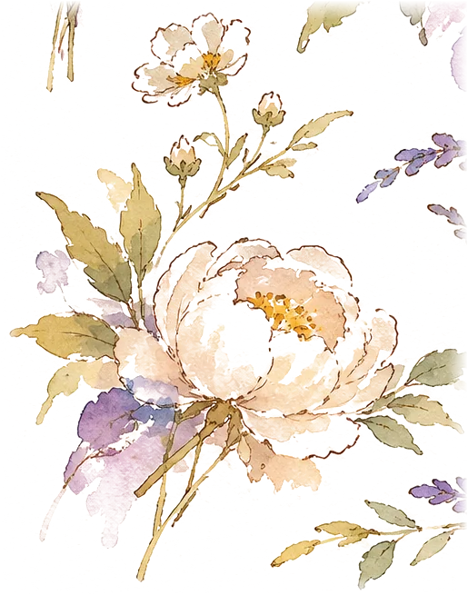
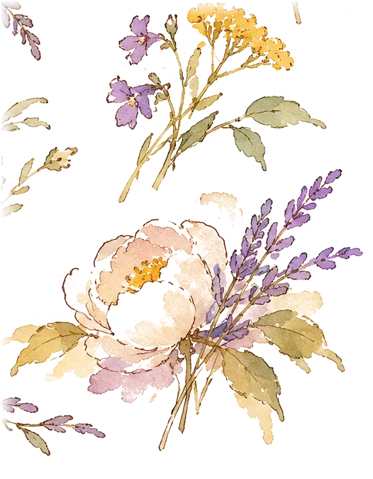
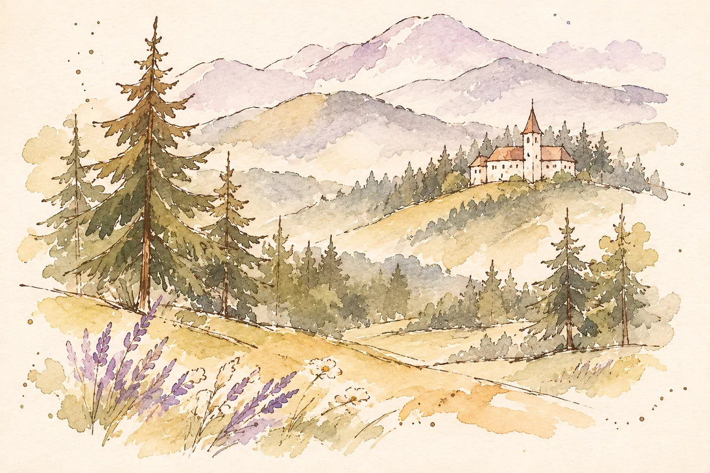
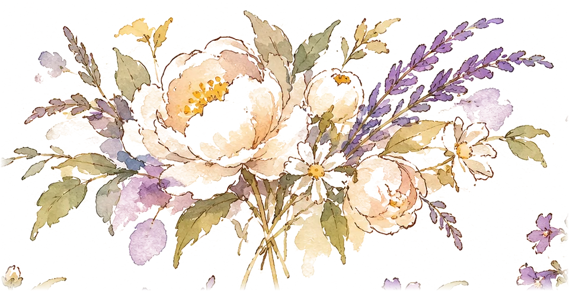

Ceremonia Ceremonia
12 · 06 · 202720:00 h
Ora 20:00


Contigo, oriunde
12 de junio de 202712 iunie 2027
Jardines de PalacioVillacañas · Toledo
EL GRAN DÍA · ZIUA CEA MARE
Un día para celebrar el amor, nuestras raíces y todas las personas que forman parte de nuestra historia.
O zi în care să sărbătorim iubirea, rădăcinile noastre și oamenii dragi din povestea noastră.
20:00 h
Ora 20:00
Villacañas · Toledo
Ceremonia și petrecerea vor avea loc în aceeași locație.
Vestidos largos o de cóctel y trajes formales.
Ținute elegante de seară: rochii lungi sau de cocktail și costume elegante.
Para esta ocasión tan especial, os sugerimos optar por un estilo elegante y sofisticado, acorde con una celebración de noche. Los vestidos largos o de cóctel y los trajes formales serán una elección ideal.
Como parte de la tradición, nos gustaría reservar los tonos blancos, beige, marfil, crema y similares exclusivamente para la novia.
Más allá de estas pequeñas recomendaciones, lo más importante es que os sintáis cómodos y disfrutéis de una noche inolvidable con nosotros.
Y un pequeño consejo: ¡traed calzado cómodo para el baile!
Pentru această ocazie atât de specială, vă sugerăm să alegeți o ținută elegantă și rafinată, potrivită unei petreceri de seară. Rochiile lungi sau de cocktail și costumele elegante vor fi alegeri ideale.
Respectând tradiția, ne-am dori ca nuanțele de alb, bej, fildeș, crem și alte tonuri asemănătoare să fie rezervate exclusiv miresei.
Dincolo de aceste mici recomandări, cel mai important pentru noi este să vă simțiți confortabil și să vă bucurați alături de noi de o seară de neuitat.
Și un mic sfat: nu uitați să aduceți încălțăminte comodă pentru dans!
NUESTRA HISTORIA · POVESTEA NOASTRĂ
Nuestra historia comenzó de la forma más inesperada: una noche de Año Nuevo, el 1 de enero de 2017. Salimos de fiesta por el pueblo, nos conocimos y descubrimos algo que todavía hoy nos hace sonreír: ¡éramos vecinos y vivíamos en la misma calle! Quién nos iba a decir que aquello que buscábamos estaba tan cerca de casa.
Povestea noastră a început în cel mai neașteptat mod: într-o noapte de Anul Nou, pe 1 ianuarie 2017. Am ieșit să petrecem în localitate, ne-am cunoscut și am descoperit ceva care ne face să zâmbim și astăzi: eram vecini și locuiam pe aceeași stradă! Cine ar fi crezut că ceea ce căutam era atât de aproape de casă?
Desde entonces, nuestra historia fue creciendo poquito a poco, entre aventuras, viajes y momentos compartidos. Somos bastante diferentes: Dani es la calma y Marina, el torbellino, pero quizá por eso encajamos tan bien. Nos encanta caminar, explorar nuevos lugares e improvisar planes, porque hemos descubierto que cualquier aventura es mejor si la vivimos juntos.
De atunci, povestea noastră a crescut puțin câte puțin, printre aventuri, călătorii și momente petrecute împreună. Suntem destul de diferiți: Dani este calmul, iar Marina este un adevărat vârtej de energie, dar poate tocmai de aceea ne completăm atât de bine. Ne place să ne plimbăm, să explorăm locuri noi și să facem planuri spontane, pentru că am descoperit că orice aventură este mai frumoasă atunci când o trăim împreună.
Y hablando de aventuras, una de las más especiales nos llevó a Asturias. Lo que empezó como un viaje improvisado terminó convirtiéndose en un recuerdo para toda la vida. Aquella mañana visitamos los lagos de Covadonga y después fuimos a comer a un precioso restaurante entre montañas. Allí, con el postre, llegó la gran pregunta. Entre nervios y emoción, volvimos a sentir esas mariposas de cuando nos conocimos.
Și, dacă tot vorbim despre aventuri, una dintre cele mai speciale ne-a dus în Asturias. Ceea ce a început ca o călătorie spontană s-a transformat într-o amintire pentru o viață întreagă. În acea dimineață am vizitat lacurile Covadonga, iar apoi am mers să luăm masa la un restaurant superb, în mijlocul munților. Acolo, la desert, a venit marea întrebare. Cu emoții și fluturi în stomac, ne-am simțit din nou ca atunci când ne-am cunoscut.
Nuestra historia une no solo dos familias sino dos culturas. Daniel se ha enriquecido tanto de España que decidió quedarse en ella. Marina está tan enamorada de Rumanía y su gente que desea volver siempre que puede.
Povestea noastră unește nu doar două familii, ci și două culturi. Daniel s-a îmbogățit atât de mult sufletește datorită Spaniei, încât a decis să rămână aici. Marina este atât de îndrăgostită de România și de oamenii ei, încât își dorește să se întoarcă ori de câte ori poate.
Hoy celebramos esa mezcla de raíces, tradiciones y personas que tanto queremos. Porque, al final, no importa dónde nos lleve la vida.
Astăzi sărbătorim această îmbinare de rădăcini, tradiții și oameni dragi. Pentru că, până la urmă, nu contează unde ne poartă viața.
Contigo, oriunde.
NOS VEMOS ALLÍ · NE VEDEM ACOLO
Jardines de Palacio
Villacañas, Toledo
Atât ceremonia, cât și petrecerea vor avea loc aici.
Antes de publicar, comprobaremos que el mapa marca la entrada correcta de la finca.
PARA VENIR Y DESCANSAR · PENTRU DRUM ȘI ODIHNĂ
Pronto compartiremos opciones de hoteles, casas rurales y apartamentos por la zona.
În curând vom recomanda hoteluri, pensiuni și apartamente din apropiere.
Estamos organizando el transporte. Los puntos de recogida y horarios se anunciarán aquí.
Organizăm transportul. Punctele de plecare și orele vor apărea aici.

QUEREMOS CUIDAR CADA DETALLE · FIECARE DETALIU CONTEAZĂ
En el formulario de asistencia también podrás indicar alergias, menús infantiles y si necesitarás autobús.
În formularul de confirmare poți menționa alergii, meniuri pentru copii și dacă ai nevoie de autocar.
Ir al formulario · Completează formularulNOS HARÁ MUCHA ILUSIÓN VERTE · NE-AM BUCURA SĂ FII ALĂTURI DE NOI
Confírmanos tu asistencia lo antes posible para ayudarnos a organizarlo todo.
Te rugăm să ne confirmi participarea cât mai curând, pentru a ne ajuta să organizăm totul.
El diseño ya está listo. Falta conectar la hoja privada donde se guardarán las respuestas; por ahora el envío está desactivado.

Mulțumim pentru răspuns!
Si necesitas cambiar algo, escríbenos por WhatsApp.
Dacă trebuie să modifici ceva, scrie-ne pe WhatsApp.